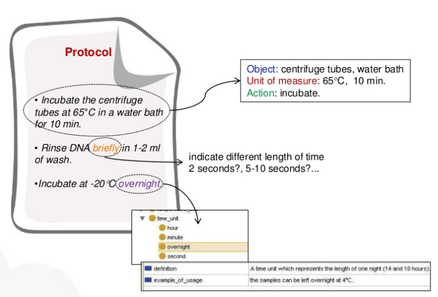

Annotating the Context of Laboratory Experiments
a Case in Column Chromatography
Created by Dena Tahvildari
PhD Candidate
VU Amsterdam and Wageningen UR
Collaborators: Anne Vissers, Guus Schreiber, Jan Top
email: d.tahvildari@vu.nl

Problem 1
The reproducibility of the method/protocol is limited
- insufficient granularity
- inadequate

Problem 2
the use of reporting guidelines is limited
- they can be imprecise or ambiguous
- no computational support
Solution
explicit representation of guidelines and protocols
ontologies + NLP
Main Research Question
Can a formal representation of reporting guidelines contribute to the quality of laboratory method descriptions?
Can MIAPE reporting guidelines be used as a knowledge acquisition source to create an ontology?
Method
- select a use case -- MIAPE-CC,
- create vocabulary from MIAPE-CC reporting guidelines,
- create a corpus: collect "material and method sections" from publications,
- measure the occurrence of extracted terms in the material and method sections,

- 7 classes were defined.
- 83 terms were collected.
- class hierarchy were defined.
- properties were identified.
- encoded into RDF format.
- 62 published papers were collected from PubMed.
- create a corpus
- prepare the corpus
- match the labels from the vocabulary to the tokens
Result
- 40 terms never occurred in any of the method description sections (48%).
- 43 remaining terms occurred at least in one method section (51%).
| classes | never occurred | occurred |
| general descriptors | 4 | 1 |
| sample | 9 | 8 |
| equipment | 22 | 2 |
| mobile Phase | 0 | 2 |
| column run | 0 | 5 |
| pre and post run processes | 2 | 6 |
| column output | 13 | 9 |
Explanation
- authors do not report on the general information in the method sections
- authors do not use high level classes -- for example the concept "manufacturer"
Branched sugar arabinon was obtained from British Sugar – Mcleary.
- authors use synonyms - eluent is a synonym for "solutions" is synonym for "mobile phase"
Conclusion
MIAPE could be used for creating the required ontology, but it needs to be further elaborated.The next step
- complete the vocabulary -- class hierarchy, properties and instances
- textual corpus ---> sentence segmentation,
- measure the concept frequency,
- outlook: use the vocabulary in an editorial software
Solution - Annotating the protocols -- IN PROGRESS 
Documentation
- Doctoral consortium paper - ESWC2015
- Annotative authoring
- code and data
Definitions
- Reproducibility
- Minimum Information About Proteomic Experiment
- Ontology